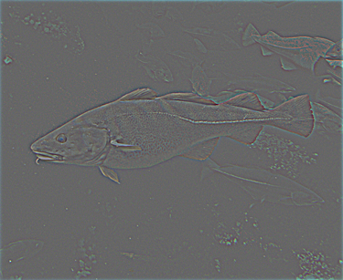

CSC 589 AU / Homework 2 / Image Filtering and Hybrid Images
Final Hybridized Image.
In this first project, our final goal was to create a hybrid image- a composite image made from a low-pass (blur) filtered image, and a high pass (sharpening) filtered image. If done correctly, the image appears to shift between the components when viewed at different distances. Squinting at the image approximates this effect as well. The final result of my hybridization is on the right, made from the images of a fish and a submarine. To create these filtered images we were tasked with building a series of functions that would do the same things that the built in filtering and image processing functions of Numpy, Scipy, or openCV would do. These functions consisted of the following
- cross_correlation_2d
- convolve_2d
- gaussian_blur_kernel_2d
- low_pass
- high_pass
The Functions
cross_correlation_2d
def cross_correlation_2d(im,k):
kx,ky=k.shape
k2=kx*ky
kx2,ky2=kx/2,ky/2
karray=np.ravel(k)
blank=np.zeros(im.shape)
if im.ndim==3:
ix,iy,colors=im.shape
else:
colors=1
ix,iy=im.shape
zeropad=np.zeros((ix+kx-1,iy+ky-1,colors))
zeropad[kx2:kx2+ix,ky2:ky2+iy]=im
for x in xrange(iy):
for y in xrange(ix):
channels=np.reshape(zeropad[y:y+kx,x:x+ky],(k2,colors))
blank[y,x]=np.dot(karray,channels)
#plt.imshow(blank)
return blank
As the name implies, the cross_correlation_2d function cross correlates an input image with an input filter kernel on a pixel by pixel basis. It creates a blank matrix of the same dimensions as the input image and fills it up with the new filtered pixels as the function works its way through the input. If the filtering leaves more or less pixels than the original, the matrix has its empty space padded with zeros. The multiple variables might be hard to track, but as a general rule i and k denote image and kernel, while x and y denote width and height. The most important part of this function is the if/else statement that formats the matrix depth properly based on whether or not the input image is a color image or not. This is necessary because the filtering functions we had to build won't work on 3d matrices, so any image with color needs to be split up into its constituent rgb channels for the later functions to work on individually before being recombined into the final, filtered color image. I had to resort to a roundabout and more manual solution to separating 3d matrices to get this to work properly since the seemingly convenient np.dsplit (3d matrix separation along depth) left a list of arrays that I couldn't crack into properly for later functions.
convolve_2d
def convolve_2d(im,k):
c2d=cross_correlation_2d(im,k)
#plt.imshow(c2d)
return c2d
convolve_2d just calls the cross_correlation_2d function.
gaussian_blur_kernel_2d
def gaussian_blur_kernel_2d(w,h):
w=int(w)
h=int(h)
x,y=np.mgrid[-w:w+1,-h:h+1]
k=np.exp(-(x**2/float(w)+y**2/float(h)))/np.exp(-(x**2/float(w)+y**2/float(h))).sum()
#plt.imshow(kernel)
#misc.imsave('kernel.png',k)
return k
gaussian_blur_kernel_2d creates a 2d Gaussian kernel given a desired height and width. It accomplishes this by applying the equation for a Gaussian distribution along both dimensions, and returns the final kernel as an array.
low_pass
def low_pass(im,slo):
lp=convolve_2d(im,gaussian_blur_kernel_2d(slo,slo))
#plt.imshow(lp)
#misc.imsave('lopass.png',lp)
return lp
low_pass performs a low-pass filtering on an input image with a square Gaussian filter of desired size. It calls convolve_2d which then calls cross_correlation_2d and gaussian_blur_kernel_2d with the input information carrying through the sequence. It returns a low-pass filtered (blurred) array.
high_pass
def high_pass(im,shi):
hp=im-low_pass(im,shi)
#plt.imshow(hp)
#misc.imsave('hipass.png',hp)
return hp
high_pass doesn't directly perform high-pass filtering on the input image, as this would require an entirely separate filter generation function. Instead it calls low_pass and subtracts the result of the low-pass filtering from the input image, returning a high-pass filtered (sharpened) array.
hybrid
iminput1=raw_input('Image to blur (with extension):')
iminput2=raw_input('Image to sharpen (with extension):')
lo=int(input('Low-pass filter size:'))#13
hi=int(input('High-pass filter size:'))#5
balance=float(input('Image balance (between 0 and 1):'))#0.7
im1=misc.imread(iminput1).astype(np.float32)/255.0
im2=misc.imread(iminput2).astype(np.float32)/255.0
lp=low_pass(im1,lo)*2*(1-balance)
hp=high_pass(im2,hi)*2*balance
hybrid=((lp+hp)*255).clip(0,255).astype(np.uint8)
plt.imshow(hybrid)
#misc.imsave('subfish.png',hybrid)
While not an actual function, the actual inputting of information and generation of the final hybrid is done with a series of additional lines. To make it user friendly, all the user-defined information is in inputs that the user is prompted with when they run the code. These are then injected into the various functions from earlier and an image is generated. Of particular note is the redefinition of the input images as float32- this is important for the filtering process and changes them in case they are unit8, if they are already float32, then nothing changes. Additionally, I implemented a handy tool the low pass and high pass images are balanced, which cuts the low-passed image's intensity to the specified value and the high-passed image's to one minus that value, before combining them. This is purely for fine-tuning how the final image looks in order to suppress or enhance how one or the other appears. Finally, the filtered images are added together, np.clip limits this array to values ranging from 0 to 255, and the array is redefined as unit8 for display and export. I tried to get this working in a while loop to keep generating new images, but imshow wouldn't work inside the loop for some reason.
Original v. Filtered Images


|
|  |
Above are the original submarine.bmp and fish.bmp used for the hybrid image, as well as their respective unbalanced low-pass and high-pass filtered versions pulled from the code via the commented misc.imsave lines dotted around.